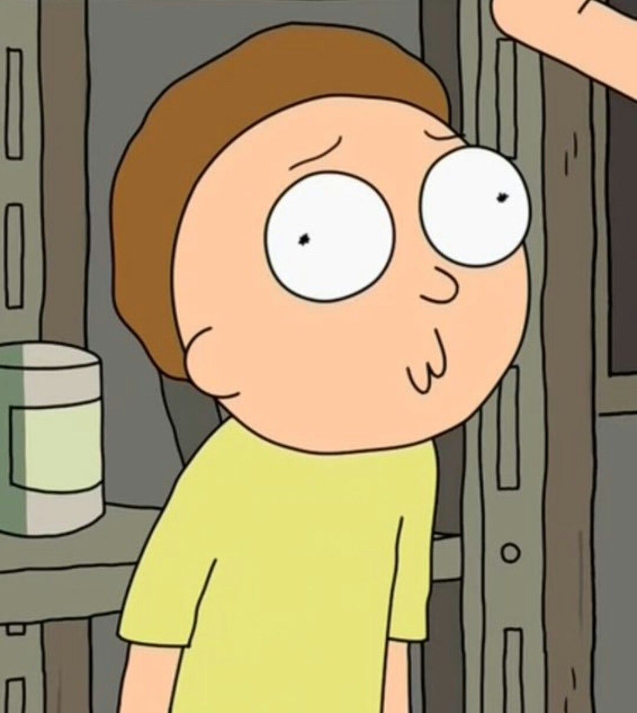
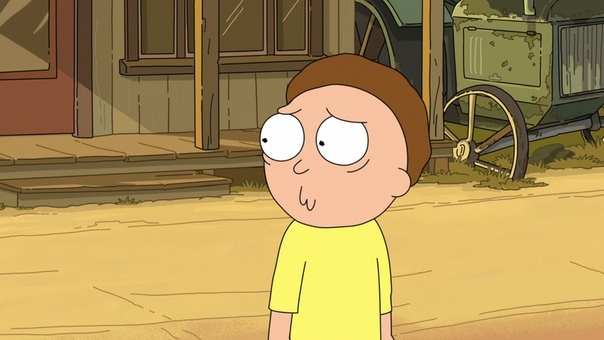
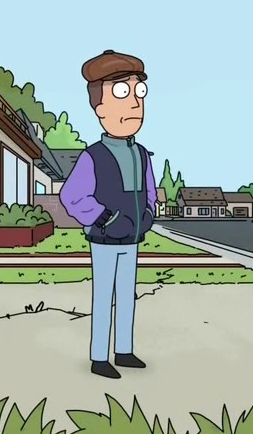
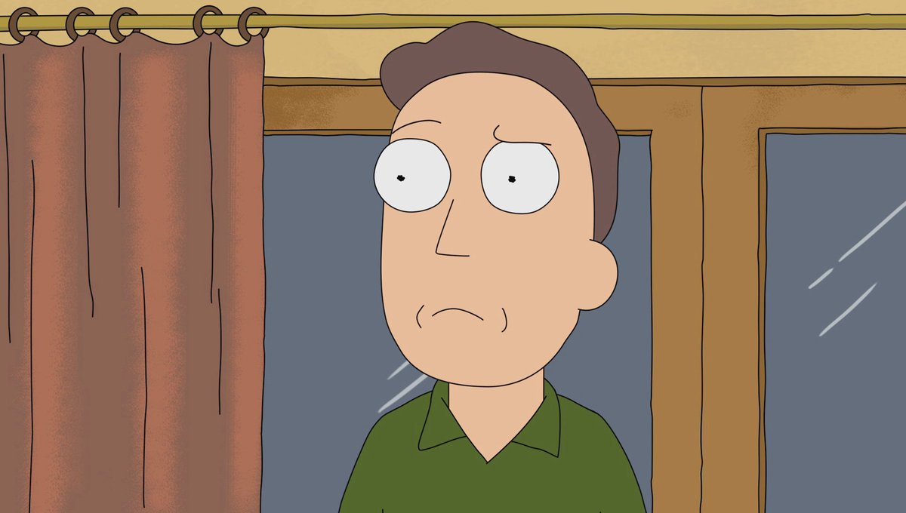
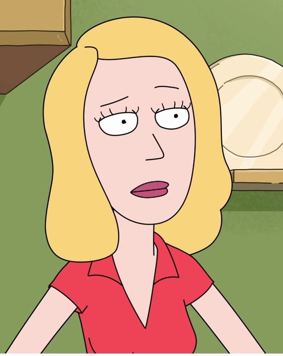
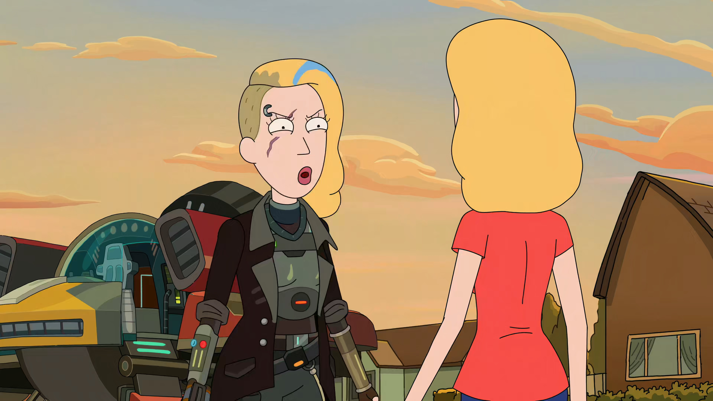
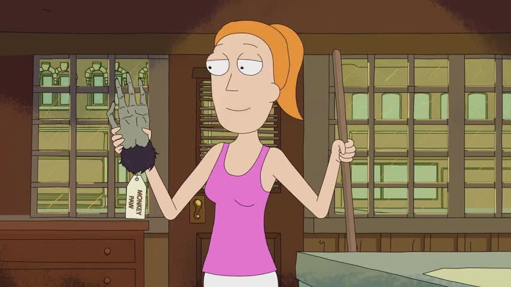

Rick and Morty is an American adult animated science fiction sitcom created by Justin Roiland and Dan Harmon for Cartoon Network's nighttime Adult Swim
programming block. The series follows the misadventures of cynical mad scientist Rick Sanchez and his good-hearted but fretful grandson Morty Smith, who split their
time between domestic life and interdimensional adventures.
Roiland voices the eponymous characters, with Chris Parnell, Spencer Grammer and Sarah Chalke voicing the rest of Rick and Morty's family. The series originated
from an animated short parody film of Back to the Future, created by Roiland for Channel 101, a short film festival co-founded by Harmon. The series has been acclaimed by critics
for its originality, creativity and humor.
MAIN CHARACTERS
RICK SANCHEZ
Rick Sanchez from Earth Dimension C-137 is the widowed father of Beth Smith, and the grandfather of Morty Smith and Summer Smith. He is said to have been away from the family
for several years prior to the events of the show. He frequently travels on adventures through space, visiting other planets and dimensions with his grandson Morty. In the third season of
the show, it is revealed that he is 70 years old. Rick created dozens of different gadgets. Some of them were better than any kind of magic. He for sure can be called the most intelligent man in the whole interdimentional universe.
In "The Ricks Must Be Crazy", Rick reveals that he powers his flying car with a battery that contains a miniature universe, or microverse, whose inhabitants
unknowingly provide the required electricity. The inhabitants cease doing this after one of their scientists does the same thing for his own universe, and discovers
that this is what Rick has done to his universe. Rick remorselessly destroys the miniature universe inside his own miniature universe, killing everyone inside. Nearing the
end of the episode, Rick knows that his own microverse would power his battery, or he dispose of it and create a new one.

Mortimer "Morty" Smith is an anxious 14-year-old based on Marty McFly from Back to the Future. Known for his awkward, anxious, second-guessing, and doubtful personality and for
his low self-esteem, the character has been well-received. He is the good-natured and impressionable grandson of the greatest scientist Rick Sanchez, and can be somewhat easily manipulated.
Others sometimes refer to him as Morty Smith C-137 in reference to the designation given to his grandfather by the Trans-Dimensional Council of Ricks, in reference to his original universe,
"C-137"; whether this is his actual universe designation is unknown. Book 1 of the Rick and Morty comic series (comprising the first two volumes of the series) follows the Rick and Morty of
Dimension C-132 while most issues of subsequent instalments follow the Rick and Morty of "C-137"; the video game Pocket Mortys follows the Rick and Morty of C-123, while various other Mortys
are the focus of episodes set in the inter-dimensional Citadel of Ricks and Mortys, ruled by President Morty Smith.


Jerry Smith is a man at his 40-s. Jerry is the husband of Beth Smith, the father of Summer Smith and Morty Smith,
and the son-in-law of Rick Sanchez. The first six episodes of season 1 featured Jerry C-137, while the current Jerry was born in and inhabits the Replacement dimension.
Jerry is often noted as somewhat of a loser. He constantly attempts to find a career to no avail, leaving his wife Beth to be the breadwinner of the family. Jerry's marriage
to Beth is often rocky and unstable, resulting in the two finally getting a divorce in the Season 3 premiere. Jerry would spend most of the season living alone and depressed in
a small apartment, until he and Beth reconcile in the Season 3 finale, although it's currently unknown if the Beth he re-married is a clone or the original Beth.
Jerry also has an adversarial relationship with his father-in-law, Rick and he often competes with the latter for the admiration of his family. However, that hasn't stopped
Jerry from becoming more involved in Rick's space adventures. Currently, Jerry has also taken up beekeeping and produces his own honey.


Bethany "Beth" Smith (née Sanchez). She is the daughter of Rick Sanchez and Mrs. Sanchez/Diane Sanchez. The wife of Jerry Smith,
and the mother of Summer and Morty Smith, she is also the daughter-in-law of Leonard Smith and Joyce Smith, and the granddaughter of Rick's Father and an unnamed woman.
She currently acts as the mother of Morty Smith and the daughter of Rick Sanchez from Dimension C-137, respectively. She currently works as a horse surgeon at the St. Equis Hospital.
Characterized by a superiority complex and abandonment issues, Beth gradually came to struggle with her husband over his contributions to their marriage, due in part to his lower-level position
and subsequent employment. Since their divorce, she has focused on raising her two children. However, by the finale she decides
to reconnect with Jerry and they are living together with their children and her father.
She has another Beth called Space Beth, but it is left up to the viewer to decide which Beth is the original and which Beth is the clone.

>
Summer Smith is a 17-year-old daughter of Jerry Smith and Beth Smith/Clone Beth,
the older sister of Morty Smith, the granddaughter of Leonard Smith, Joyce Smith, Rick Sanchez and Mrs. Sanchez/Diane Sanchez, the great-granddaughter of Rick's Father and a unnamed woman,
and the great-niece of the Unnamed Uncle, she currently acts as the older sister of Morty and the granddaughter of Rick from Dimension C-137. She is the only other member of the the Smith Family
to be aware of that fact. She is very brave though can act as a "typical" teenage girl. She sometimes comes up with different ideas Rick and Morty usually disapprove. Summer always tries to help her grandfather and younger brother.

>

")